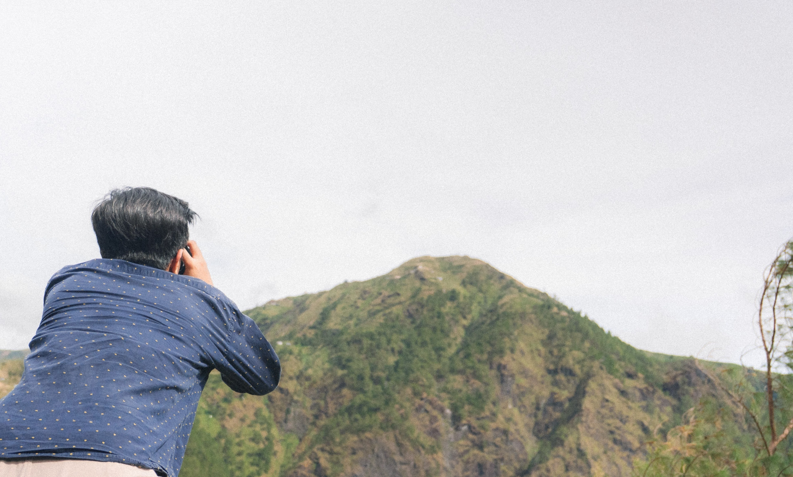

Credentials
Education
Bachelor of Science in Geology
University of the Philippines Diliman | 2019 – 2023
Cum Laude
Nominated for Best Undegraduate Thesis Award: Environmental Implications of Recent Foraminiferal Distribution in Pagbilao Bay, Quezon Province, Philippines
Experience
Project Senior Science Research Specialist
DOST Philippine Institute of Volcanology and Seismology | May 2026 – Jul 2026
- Led the establishment of a standardized workflow for integrating national, local, and other stakeholder datasets into a cloud-based geospatial enterprise system
- Developed geoprocessing models using ArcGIS ModelBuilder and ArcPy for streamlined batch creation of template layers used by multi-level stakeholders to create, visualize, and analyze geospatial data
- Supervised junior project staff and represented the team in technical reviews, consultations and alignment activities, and inter-project and agency collaborations
Project Science Research Specialist II
DOST Philippine Institute of Volcanology and Seismology | Jan 2025 – May 2026
- Spearheaded multi-agency data discovery and integration efforts toward the development of a comprehensive planning application and an integrated disaster preparedness platform
- Designed and optimized web and mobile applications using ArcGIS Map Viewer, Experience Builder, and Arcade to enable real-time data entry validation and automated spatial calculations
- Built scalable spatial models for dasymetric risk assessment, auto-identification and suitability assessment of safe open spaces for earthquakes, and road network analysis for emergency evacuation
Project Science Research Specialist I
DOST Philippine Institute of Volcanology and Seismology | Mar 2024 – Dec 2024
- Configured geospatial applications using ArcGIS Web AppBuilder, Field Maps, Dashboards, and StoryMaps to bridge data collection, analysis, and visualization for both technical and non-technical stakeholders
- Facilitated capacity-building workshops for national agencies, local government units, and higher education institutions on leveraging geospatial solutions for data-driven planning and decision-making
Geographic Information Systems Specialist II
DENR Forest Management Bureau | Oct 2023 – Mar 2024
- Created a Python-based mechanism in QGIS to detect erroneous entries in land parcel attributes and utilized ArcMap for plotting lot technical descriptions and land classification overlay
- Assisted in the conduct of an orientation workshop for project stakeholders and prepared reports, letters, memoranda, communication, and other documents
Skills
Geospatial data management
transformation and integration, database design, quality control and assurance
Enterprise and web GIS
ArcGIS Enterprise Portal and Server, ArcGIS Online, PostGIS, GeoNode, GeoServer
Spatial analysis and remote sensing
ArcGIS Pro, ArcMap, QGIS, Global Mapper, Google Earth Engine
Workflow automation and programming
Python, SQL, ArcGIS ModelBuilder, Arcade, FME, R
Portfolio
- All
- Maps
- Posters
- Organizations


{kind=link}
{kind=link}
{kind=link}
{kind=link}
{kind=link}
{kind=link}